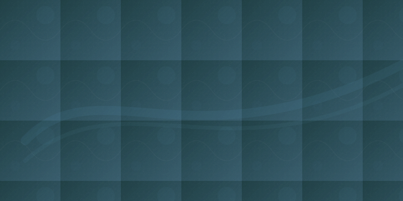

How I work with people
Clinical listening, small experiments, and practical scaffolding. Below are the pillars that shape sessions and the way I translate a current mood into a recommended method.
Pause & Notice
We begin by slowing to notice what’s active right now — thoughts, body sensations, and the immediate pattern.
Map & Experiment
We map recurring cycles and try small, testable changes between sessions to see what shifts.
Skill & Context
Tools are practical and tailored: brief exercises, communication moves, or pacing adjustments for daily life.
Pick how you feel now
Selecting a current state will shape the recommended session focus and the call-to-action. The aim is clarity and a next practical step, not promises of outcomes.
{{PRIMARY_CTA_LABEL}}
Or reach out: {{PHONE}}

Confidentiality: sessions are private. Limits include harm to self/others, abuse of minors/elders, and legal requirements.